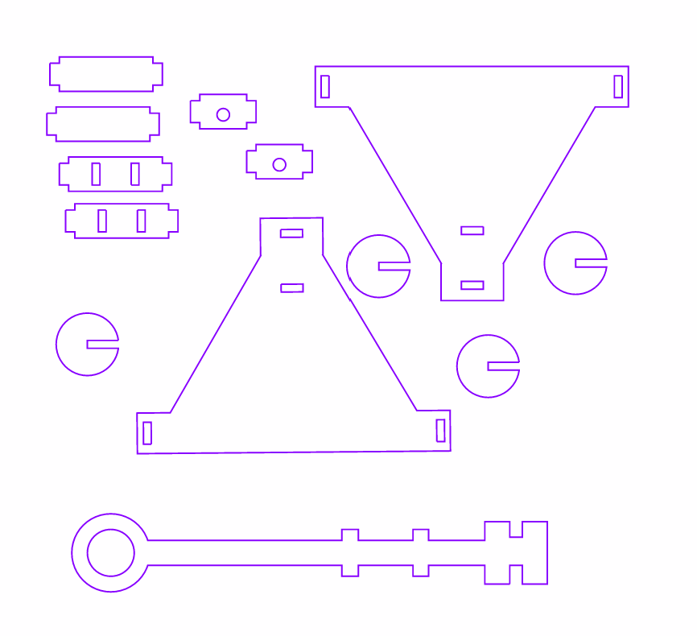

⚖️ 槓桿翹翹板平衡模擬器
目前狀態：完美平衡！🛠️ 槓桿三要素調控
國小科技資訊教育教案：投石戰車
🎓 課程成果：115學年度第一學期科技領域教材教法 ｜ 👨🏫 指導老師：顏榮泉老師
👩🏫 教學設計團隊：周昱芊、陳新宜、何羽喬、許睿芯 ｜
🎒 實施對象：國小六年級 ｜
⏱️ 教學節數：自然科學領域（1 節）＋ 資訊科技領域（4 節），合計 5 節（200 分鐘）
彈性位能與動能轉換、槓桿原理（支點、施力點、抗力點）。
運用 Tinkercad 繪製 3D 設計圖、電腦模擬軟體測試拋物線。
手作組裝投石機結構、材質測試、結構加固與功能微調。
投石機外觀造型美編與結構手繪圖稿呈現構想。
測量橡皮筋伸長量、多組試射距離平均值計算與折線圖繪製。
📊 1. 雙向細目表 （點選項目可查看對應活動與目標）
| 學習內容 \ 學習表現 | 科議 k-Ⅲ-1 說明常見科技產品用途與運作方式 |
資議 t-Ⅲ-1 / 科議 s-Ⅲ-1 運用資訊系統 / 製作圖稿呈現構想 |
科議 c-Ⅲ-1 / 科議 s-Ⅲ-2 依設計實作 / 使用常見手工具與材料 |
資議 t-Ⅲ-3 / 科議 c-Ⅲ-3 運用運算思維 / 展現合作解決問題 |
|---|---|---|---|---|
|
科議 N-Ⅲ-1 科技的基本特性 自 INb-Ⅲ-4 力可藉由簡單機械傳遞 |
理解槓桿的基本概念，並應用在投石器上。 | |||
| 科議 P-Ⅲ-1 基本的造形與設計 | 利用 Tinkercad 繪製投石器。 | |||
| 科議 P-Ⅲ-2 工具與材料的使用方法 | 能依據設計圖完成投石機的組裝，並測試功能。 | |||
| 資議 D-Ⅲ-2 系統化資料管理方法 | 能根據測試數據進行分析，並使用表格呈現不同橡皮筋數量與射程遠近的關係。 |
🎯 2. 學習目標與專題摘要
本專題以歷史上的攻城武器「投石機」為核心情境，帶領國小六年級學生整合槓桿原理與彈性位能，經歷「科學探究 ➔ 數位模擬 ➔ 工程實作 ➔ 數據分析」的完整 STEAM 歷程。
📋 3. 評量表現規準（7 項評量依據）
- 1. 槓桿原理與能量概念說明：透過翹翹板與投石機說明槓桿運作及彈性位能釋放。
- 2. 模擬系統探究與因果推論：操作模擬器推導初速度、彈力與射程關聯。
- 3. 機構設計圖稿繪製：標註支點、橡皮筋固定處、投射臂與盛彈處四要素。
- 4. 投石機結構組裝與手工具規範：安全組裝雷切零件並確保活動結構順暢。
- 5. 操縱變因實測紀錄：確實記錄不同橡皮筋數量之 3 次試射與平均射程。
- 6. 射程折線圖繪製與數據分析：正確繪製圖表座標軸並詮釋彈力位能變化規律。
- 7. 團隊合作與成果反思：依據評估表完成客觀互評，並提出機構改良方案。
🗺️ 4. STEAM 投石機探究與實作課程架構圖
本課程採循序漸進架構，由物理觀念啟蒙出發，歷經數位模擬預測、工程實體製造，最終回到科學實證與數據分析分享，環環相扣：
🎯 5. 教學活動步驟（4 大活動，共 5 節 200 分鐘）
活動簡述：學生能藉由彈性物品的操作，理解彈性位能的儲存與釋放過程；並運用翹翹板認識槓桿的基本原理，進一步思考並探究投石機的設計構想。
| 教學活動名稱 | 活動內容（含時間分配） | 評量方式與規準 |
|---|---|---|
| 探索槓桿與彈性位能 |
1. 使用生活中彈性物品（橡皮筋、彈簧）展示能量儲存與釋放（5 mins） 2. 利用不同橡皮筋測量同物體伸長量，觀察能量釋放投射物體（8 mins） |
引導式問答、學習單 能舉出彈性物品並說明拉長儲存、放開釋放；計算伸長量與投射距離關聯。 |
| 槓桿翹翹板 |
1. 介紹槓桿三要素（支點、施力點、抗力點），用翹翹板為例（12 mins） 2. 運用線上互動遊戲，觀察支點位置改變時的平衡與施力大小（10 mins） |
口頭報告、引導式問答 清楚解釋投石機功能運作原理，並聯繫生活中的槓桿實例。 |
| 生活中的工具 | 讓學生列舉生活中運用槓桿的工具（剪刀、老虎鉗），並想像如何應用在投石機設計上（5 mins） | 能指出工具之支點、施力點與抗力點；說明投石機支點與槓桿臂長短之影響。 |
活動簡述：透過電腦模擬軟體測試不同力道（模擬橡皮筋彈性大小）對拋射距離的影響，並記錄數據進行分析，進而繪製出利用彈性驅動的投石機設計圖稿。
| 教學活動名稱 | 活動內容（含時間分配） | 評量方式與規準 |
|---|---|---|
| 彈道視界–數位模擬初探 |
1. 教師示範操作模擬軟體，引導學生觀察固定角度下初速度對落點遠近的影響。 2. 結合日常經驗引發「彈力大小如何決定拋射距離」探究動機（8 mins） |
口頭評量 學生能口頭說明彈力大小、初速度與拋射距離之間的因果關係。 |
| 彈力解密–速度變因實測 |
1. 學生分組操作模擬系統，固定方向調整初速度，記錄飛行距離（6 mins） 2. 進行多組測試，系統化驗證速度越快距離越遠（6 mins） |
紀錄表（學習單一） 檢視《實驗紀錄表-電腦模擬》，確認如實記錄初速度與拋射距離。 |
| 藍圖誕生–構想與繪圖 |
1. 數據統整討論：得出初速越快效果越佳結論（10 mins） 2. 各組討論橡皮筋固定方式，繪製投石機結構草圖（10 mins） |
設計圖（學習單二） 檢視是否清楚標示支點、橡皮筋固定處、投射臂與盛彈處。 |
活動簡述：學生根據設計圖組裝投石機並進行測試與微調，探討不同橡皮筋數量對投影距離的影響。
| 教學活動名稱 | 活動內容（含時間分配） | 評量方式與規準 |
|---|---|---|
| 我來做看看 | 學生根據設計圖組裝投石機，正確使用材料與手工具。（30 mins） | 教師觀察 確認能安全且正確組裝，符合操作規範。 |
| 小零件大影響 | 1. 測試裝備是否能正常運行與調整（10 mins） 2. 測試不同橡皮筋數量對投影距離之影響（10 mins） |
教師觀察 能正確測試不同橡皮筋數量並觀察其對投射距離之影響。 |
| 測試與調整 | 學生測試不同橡皮筋數量對投射距離的影響並微調結構。（30 mins） | 作品檢查、實驗記錄表（學習單三） 檢查作品能正常運作並如實填寫數據。 |
活動簡述：學生整理投石機實驗數據，製作折線圖，分析不同橡皮筋數量對投射距離的影響，並透過分組報告分享實驗成果與心得。
| 教學活動名稱 | 活動內容（含時間分配） | 評量方式與規準 |
|---|---|---|
| 一、實驗數據整理 | 教師引導回顧上一節測試結果，各組整理不同橡皮筋數量條件所測得之數據記錄於學習單。（8 mins） | 實作評量 能正確整理並記錄實驗數據。 |
| 二、繪製折線圖 | 示範如何轉換成折線圖，學生以橡皮筋數量（條數）為橫軸、投射距離為縱軸繪製。（12 mins） | 實作評量 能正確繪製折線圖並清楚標示座標軸與單位。 |
| 三、分析與討論 | 各組觀察數據，討論哪種橡皮筋數量射得最遠，思考橡皮筋數量與投射動能的關係及其他影響因素。（10 mins） | 口語評量 能根據實驗數據提出合理解釋，參與討論。 |
| 四、成果分享與反思 | 各組分享最佳條件、遇上的困難與解決方式；完成小組同儕互評。（10 mins） | 互評表（學習單四） 能清楚表達成果，完成四面向互評打分。 |
💡 6. 教學回饋與應對策略錦囊
提供較多的步驟示範與逐步指引，並安排操作熟練的小幫手同學就近巡視協助。
事先準備圖表範本（或使用本網頁之自動折線圖產生器），讓學生先填入套用，無痛銜接後續討論。
先以生活中的翹翹板、剪刀舉例，搭配本站「翹翹板模擬器」動態調整支點，再標註投石機三點。
提供預設基本零件模板檔（如側板、投擲臂），學生僅需修改長度或孔位數值即可製作。
明確分配組員角色（記錄員、操作員、測量員、報告員），並備好半成品投石機供進度落後組使用。
📚 7. 參考資料
- 1. 雷切投石車模型（實體教具機構與 3mm 椴木板卡榫圖樣）
- 2. 十二年國民基本教育課程綱要 - 科技領域（核心素養與學習重點指引）
🛠️ 投石戰車 實作組裝教學中心
對應活動三（動手造投石機，共 2 節 80 分鐘）：依序包含雷射切割零件圖樣、手作組裝教學示範影片與成品實體對照。

📐 一、投石戰車 雷射切割零件圖檔 (Laser Cut Parts Blueprint)
💾 下載原始圖檔 (PNG)本設計採用 3mm 椴木板雷射切割，精準配置卡榫扣合結構與防呆定位孔。動手組裝前請各組先依圖盤點零件是否齊全。

📦 零件清單盤點表
- 三角側板主支架 2 個（左右對稱，含軸心孔與定位卡榫孔）
- 投射長臂 1 個（長端為盛彈杓槽，另一端具多重卡榫孔）
- 底座橫向固定樑 4 個（連結左右側板，確保底盤水平與抗扭剛性）
- 中央軸心固定板 2 個（圓形扣片，支撐投射臂旋轉運作）
- 底盤側輪 / 圓形固定盤 4 個（卡榫輪片，提供車身著地穩定度）
🎬 二、投石機手作組裝教學示範影片 （建議全螢幕觀看，跟隨示範一步步組裝）
📸 三、組裝完成實體照片對照（正面與側面雙視角）
組裝完成後請對照下列成品照片，詳細確認「支點位置」、「投射臂方向」與「橡皮筋安裝」是否完全正確。
- 投射臂置中穿過兩側三角板，左右保留適當轉動公差間隙。
- 橡皮筋對稱穿套在左右固定卡榫，保證擊發時兩端拉力均勻不偏斜。
- 盛彈圓杓水平朝上，放上木球或重石時不傾翻，拋射時能自然離杓。
- 三角側板底邊平穩著地，前後橫樑卡榫完全卡入。
- 投射臂穿過上層轉動軸心，後端長臂自然翹起，呈最佳預備投射仰角。
- 橡皮筋套在投射臂下方孔位與底座前端支架之間，拉伸行程順暢無卡死。
📋 四、實作動手造 4 步驟指引
核對兩片三角側板、投射臂、橫樑固定片與橡皮筋規格（單條細、雙條細、單條粗、雙條粗）。
將前後橫樑卡榫嵌入三角側板中，確認底盤平整不翹起，必要時加塗少許白膠加固。
將投射臂的轉軸卡入軸孔，測試輕輕撥動長臂時是否能順暢自由擺動，無摩擦卡滯。
先從「單條細橡皮筋」開始測試，扣於前端孔位，輕拉釋放進行第一次功能驗證！
📐 投石戰車設計圖線上繪圖板
對應學習單二：請畫出你們小組的投石機側視或立體結構圖，並標註四要素：① 支點 ② 橡皮筋固定處 ③ 投射臂 ④ 盛彈處。
實驗紀錄表 - 電腦模擬
國小六年級科技資訊教育 投石戰車 STEAM 跨域探究教案 學習單一
1. 在數位模擬軟體中維持「固定發射方向（45°）」，分別測試不同出速度（模擬橡皮筋不同彈力強度）。
2. 每次設定進行 3 次模擬發射，並計算平均拋射距離（公尺）。填入各次數值後，系統會自動幫您計算平均值！
| 模擬次序 | 模擬出速度 (m/s) | 第 1 次距離 | 第 2 次距離 | 第 3 次距離 | 平均距離 |
|---|---|---|---|---|---|
| 測試 A | 弱（例如 10 m/s） | -- m | |||
| 測試 B | 中（例如 15 m/s） | -- m | |||
| 測試 C | 強（例如 20 m/s） | -- m | |||
| 測試 D | 特強（自訂 25 m/s） | -- m |
💡 數據發現與思考：
答：出速度越快，拋射的距離越 ， 這代表物體獲得的動能越 。
📋 附錄六大資源清單（支援線上開啟與檔案下載）
| 編號 | 資源項目名稱 | 適用課程階段 | 格式 | 👀 線上開啟 | 📥 檔案下載 |
|---|---|---|---|---|---|
| 1 | 📖 完整教案本文（最新 15 頁修訂版） | 全五節教學設計、架構圖與學習單 | PDF (15頁) / MD | 開啟教案 PDF ↗ | 下載教案 PDF |
| 2 | 📐 雷切零件圖檔 | 活動三：手作組裝投石機 | 高解析 PNG 圖檔 | 下載雷切圖 | |
| 3 | 📄 學習單一：實驗紀錄表 (電腦模擬) | 活動二：彈道數位拋射模擬 | 互動網頁 / 文本 | ||
| 4 | 🎨 學習單二：我們的設計圖！！！ | 活動二、三：機構構想與繪圖 | 手繪畫板 / 文本 | ||
| 5 | 🔬 學習單三：實驗紀錄表 (投石機實測) | 活動三：動手實測與變因測試 | 互動網頁 / 文本 | ||
| 6 | ⭐ 學習單四：實驗結果評估表 | 活動四：成果發表與同儕互評 | 自評互評 / 文本 |
📖 資源一：國小科技資訊教育教案《投石戰車》完整本文（15 頁修訂版）
教案核心架構包含：
- 雙向細目表：對應科技教育（N-Ⅲ-1, P-Ⅲ-1, P-Ⅲ-2）與資訊教育（D-Ⅲ-2）學習內容與表現指標。
- 教案概述：STEAM 五大面向、先備知識、總綱核心素養（A2系統思考、B3藝術涵養、C2團隊合作）。
- 評量規準：7 大具體評量項目與觀察評分標準。
- 課程設計架構圖：四大活動循序漸進架構與子步驟時數分配。
- 教學流程：活動一（40分）、活動二（40分）、活動三（80分）、活動四（40分）共五節 200 分鐘。
📐 資源二：投石戰車 3mm 椴木板雷射切割零件圖檔
雷切規格說明：
採用 3mm 椴木合板切割，內含三角側板 2 個、長臂 1 個、橫樑 4 個、軸心板 2 個與側盤 4 個。各接合卡榫具備防呆定位孔設計，能直接匯入各廠牌雷切機軟體排版輸出。
📄 資源三：學習單一（實驗紀錄表 - 電腦模擬）
六年___班 第___組 組長：___________ 組員：__________________________
| 模擬次序 | 模擬出速度 (m/s) | 第 1 次 | 第 2 次 | 第 3 次 | 平均距離 |
|---|---|---|---|---|---|
| 測試 A | 弱（例如 10 m/s） | _____ m | _____ m | _____ m | _____ m |
| 測試 B | 中（例如 15 m/s） | _____ m | _____ m | _____ m | _____ m |
| 測試 C | 強（例如 20 m/s） | _____ m | _____ m | _____ m | _____ m |
| 測試 D | 特強（自訂速度） | _____ m | _____ m | _____ m | _____ m |
🎨 資源四：學習單二（我們的設計圖！！！）
六年___班 第___組 作品名稱：___________________ 繪圖者：___________
🔬 資源五：學習單三（實驗紀錄表 - 投石機實測）
六年___班 第___組 紀錄人員：___________ 發射手：___________
| 組別次序 | 橡皮筋數量 / 規格 | 第 1 次 (cm) | 第 2 次 (cm) | 第 3 次 (cm) | 平均距離 |
|---|---|---|---|---|---|
| 條件 1 | 1 條橡皮筋 | _____ | _____ | _____ | _____ cm |
| 條件 2 | 2 條橡皮筋 | _____ | _____ | _____ | _____ cm |
| 條件 3 | 3 條橡皮筋 | _____ | _____ | _____ | _____ cm |
| 條件 4 | 自訂（ 條橡皮筋） | _____ | _____ | _____ | _____ cm |
⭐ 資源六：學習單四（實驗結果評估表）
評分组別：第___組 受評組別：第___組 評審學生：___________
| 面向 | 評量指標與表現說明 | 得分 |
|---|---|---|
| 科學概念 | 彈性位能與槓桿原理理解 | 【 / 5 】分 |
| 工程實作 | 投石機結構組裝與穩固性 | 【 / 5 】分 |
| 數據分析 | 圖表記錄與結果詮釋 | 【 / 5 】分 |
| 團隊合作 | 分工溝通與解決問題 | 【 / 5 】分 |
| 總得分合計（滿分 20 分）： | 【 / 20 】分 | |